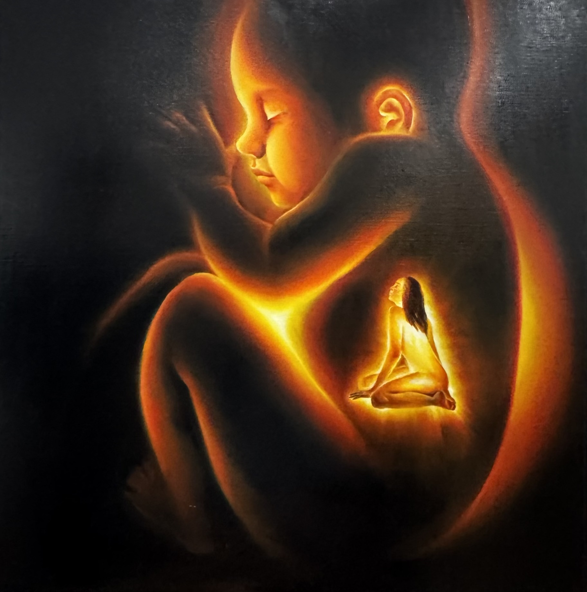
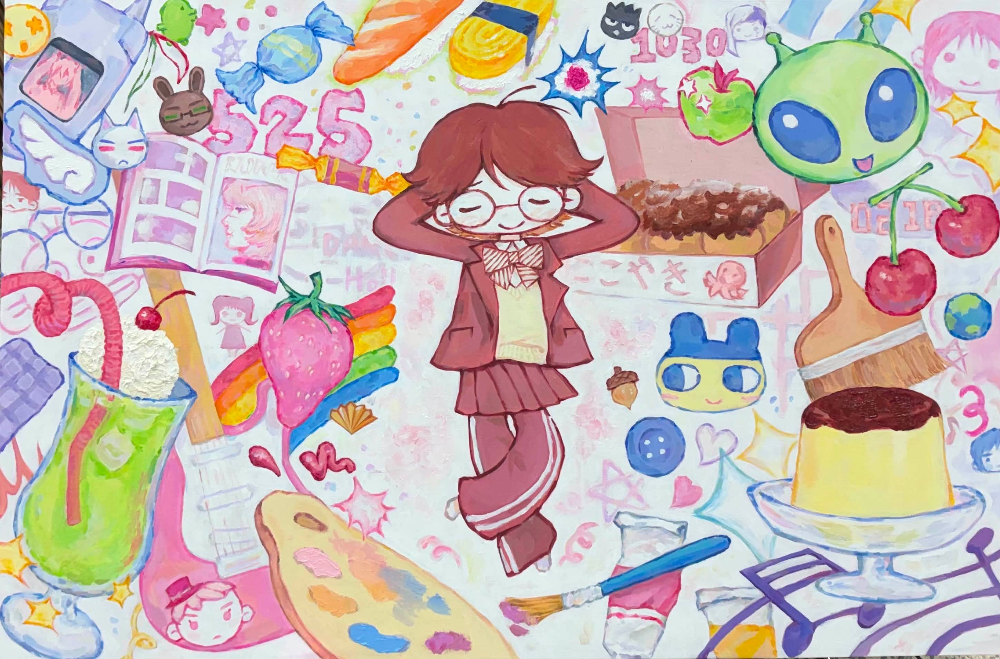
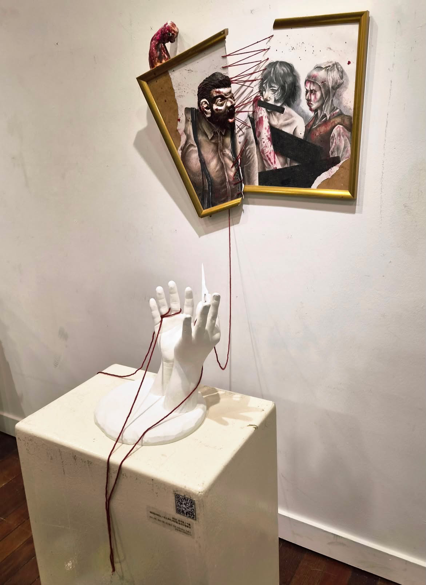
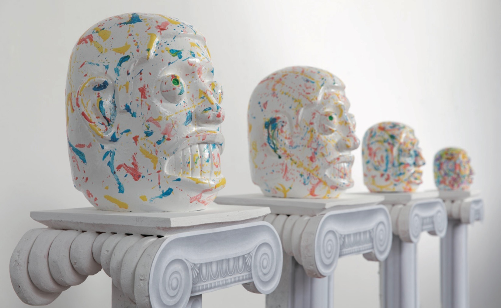

23기STUDENT WORKS
서양화

빛의 자리
우리는 누구를 잊고 살아가는가?
빛은 한곳에 머물지 않고 스며들며 다른 존재 안에 남는다.
보이지 않아도, 오래도록 서로를 밝힌다.
우리가 밝히는 그들은 당신의 친구일 수도,
당신의 어머니일 수도, 당신일 수도
보이지 않아도, 오래도록 서로를 밝힌다.
우리가 밝히는 그들은 당신의 친구일 수도,
당신의 어머니일 수도, 당신일 수도

사회 문제를 풍자하는 대신 나 자신을 주제로 자화상을 그려,
내가 좋아하는 것들과 함께 취향과 일상을 솔직하게 표현했다.
이 작품에는 있는 그대로의 나를 긍정적으로 바라보려는 의미와,
그림을 그리며 느낀 즐겁고 행복한 감정이 담겨 있다.
내가 좋아하는 것들과 함께 취향과 일상을 솔직하게 표현했다.
이 작품에는 있는 그대로의 나를 긍정적으로 바라보려는 의미와,
그림을 그리며 느낀 즐겁고 행복한 감정이 담겨 있다.
한국화

수호의 경계에서
이 작품은 눈에 보이지 않는 자연의 흐름과 진정한 가치를 지키는 수호자의 존재를 통해,
인간이 잊고 있는 소중한 가치의 의미를 전하고자 한다.
또한 탐욕으로 그 가치를 해치는 자는 결국 그 경계에서 받아들여질 수 없음을 표현하였다.
인간이 잊고 있는 소중한 가치의 의미를 전하고자 한다.
또한 탐욕으로 그 가치를 해치는 자는 결국 그 경계에서 받아들여질 수 없음을 표현하였다.
조소

이름
이 작품은 가족이라는 이름이 사람들을 이어주는 동시에 폭력과 상처까지 묶어두는 구속이 될 수 있음을 표현하였다.
이를 통해 우리가 당연하게 여겨온 가족의 의미와 관계를 다시 생각해 보기를 바란다.
이를 통해 우리가 당연하게 여겨온 가족의 의미와 관계를 다시 생각해 보기를 바란다.
디자인
분식수호대
숨은 맛집으로 입소문을 타고, 방송에까지 소개되며 최고의 인기를 누리던 할매분식.
그러나 세월이 흐르며 낡은 가게는 무개념 별점 테러범과 재개발 세력의 표적이 되고, 결국 폐업의 위기에 놓인다.
이에 할머니는 전설의 레시피로 분식수호대를 제조하는데...
분식수호대! 지켜라! 되찾아라! 승리하라!
그러나 세월이 흐르며 낡은 가게는 무개념 별점 테러범과 재개발 세력의 표적이 되고, 결국 폐업의 위기에 놓인다.
이에 할머니는 전설의 레시피로 분식수호대를 제조하는데...
분식수호대! 지켜라! 되찾아라! 승리하라!
릉이와 토리
서로 상반된 성격의 강아지와 고양이 캐릭터 디자인이다.
강아지는 애교가 많고 고양이는 무뚝뚝하다 라는 편견을 깨기 위해 만들어진 캐릭터들이다.
강아지는 애교가 많고 고양이는 무뚝뚝하다 라는 편견을 깨기 위해 만들어진 캐릭터들이다.
22기STUDENT WORKS
조소

cradle to the grave
이 작품은 타인과의 관계에 따라 달라지는 나의 태도와 심리 상태를 생명체의 크기, 표정, 색의 변화를 통해 표현하였다.
또한 진정한 모습은 신뢰와 편안함을 느끼는 사람들에게만 드러난다는 점을 보여주고자 하였다.
또한 진정한 모습은 신뢰와 편안함을 느끼는 사람들에게만 드러난다는 점을 보여주고자 하였다.
디자인
접속오류
외계 존재에게 내면과 신체를 잠식당하며 정체성의 혼란을 겪는 이들의 이야기를 담은 작품이다.
쯔꾸르 공포게임에서 영감을 받았으며, 이 세계관은 3D 모델링, 영상, 일러스트, 굿즈 등 다양한 매체로 시각화되어 전개됩니다.
쯔꾸르 공포게임에서 영감을 받았으며, 이 세계관은 3D 모델링, 영상, 일러스트, 굿즈 등 다양한 매체로 시각화되어 전개됩니다.